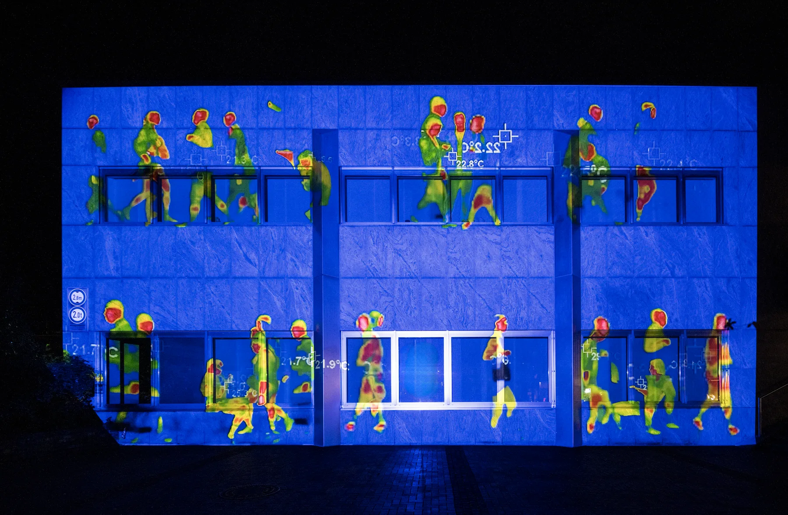
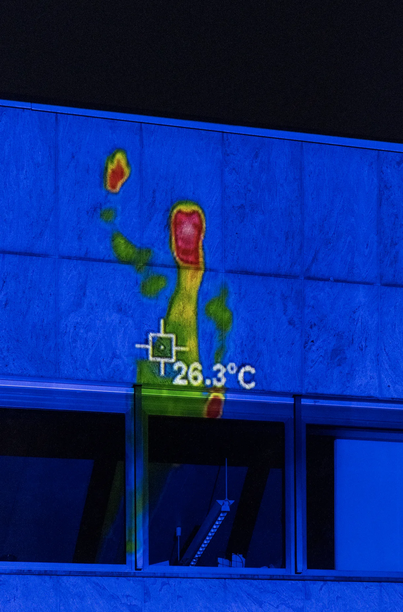
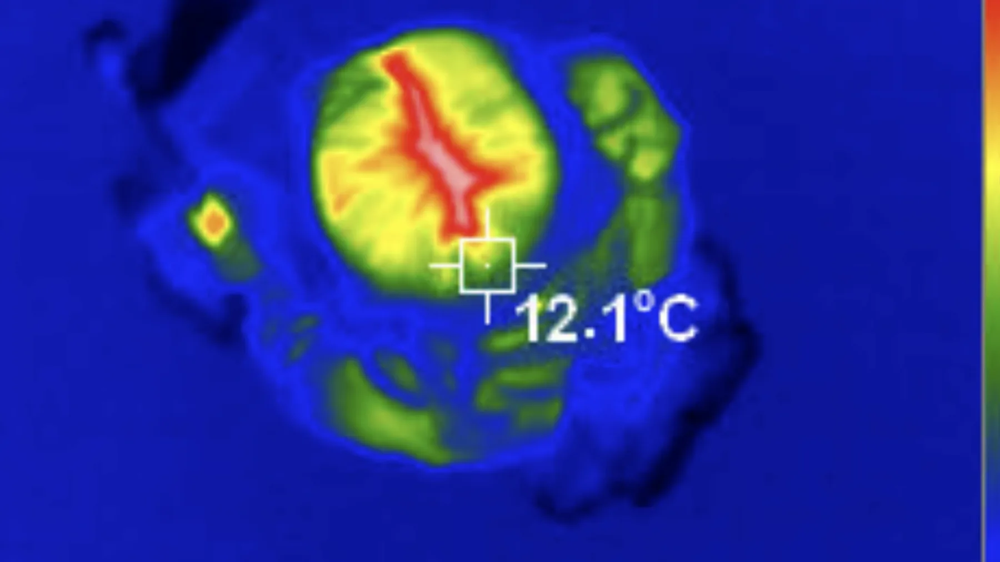
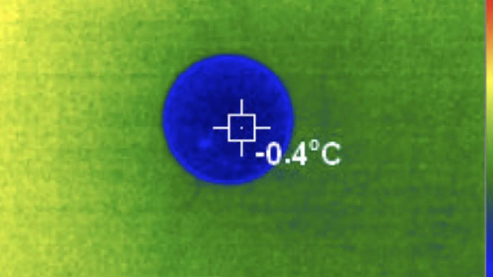
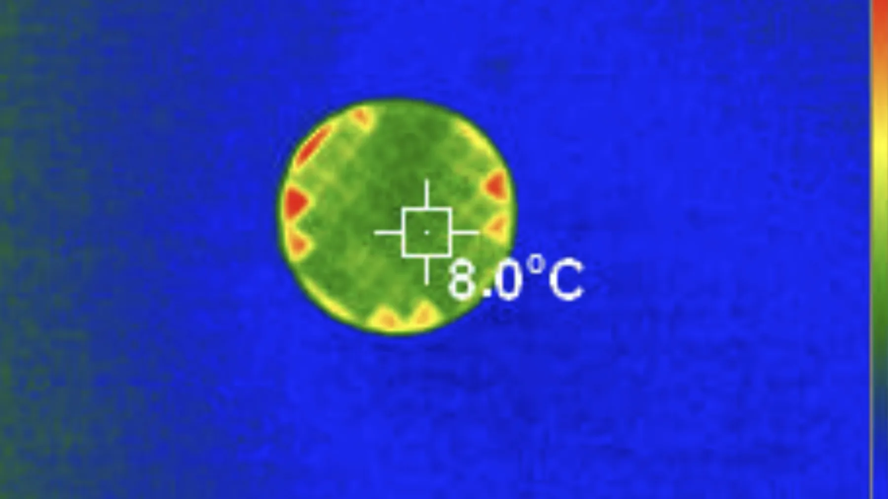

Assitive Feeling Device for Those Who Are Used to Only Seeing (2023-2024)
Live streaming of the exhibition “A Flowing Body Does Not Decay” with thermal camera (Version 2023)
5 mins video modefied for Goldstücke Licht Kunst Projekt Gelsenkirchen (Version 2024)
{kind=link}

Exhibition at Goldstücke, Gelsenkirchen(de), Photo by Jennifer Brawn
"Assistive Feeling Device for Those Who Are Used to Only Seeing" was presented as part of the solo exhibition "Flowing Bodies Do Not Decay". This work explores a reconfiguration of the viewer's gaze through the technical medium of the thermal camera.
The exhibition visually extends the experience of the work "A Chair for Co-responding". The temperature change of the aluminium chair, warmed by the viewer's body heat, is observed in real time through a thermal imaging camera, and the changing temperature flow is captured on screen as a change in colour. Through this process, the viewer witnesses the disappearance of the traces of their own body heat and becomes aware of our bodies as being in a constant state of flux.


While "A Chair for Co-responding" engaged the audience as active participants, "Assistive Feeling Device for Those Who Are Used to Only Seeing" shifts their role to that of external observers.
At the same time, it acts as an aid to bring us back to the sensory flow that we have become accustomed to ‘seeing’ and have missed.The work connects the flow of heat as a metaphor for life and death, relationships and interactions, and suggests that our bodies are not monolithic entities but flows. As a device that helps those ‘used to seeing’ to step out of their comfort zone and look at themselves in a new way, it suggests the possibility of a deeper understanding of the traces of life.


At the Goldstücke Gelsenkirchen Light Art Festival, the work extended its exploration of thermal and sensory dynamics into the context of a city shaped by urbanization and migration. The project revitalized an empty building, mapping images of recorded people walking through projections that evoked a sense of life and presence. By animating the cold, dormant structure with these thermal traces, the work metaphorically breathed warmth and vitality into the vacant space, reflecting on themes of movement, absence, and the transformative potential of human interaction within the urban landscape.
Foreword : “A Flowing Body Does Not Decay” - 권태현 (한국어)
Review : “A Flowing Body Does Not Decay” - 정만근 (한국어)
Exhibitions:
<Diplopia>
Goldstücke Licht Kunst Projekte,
façade, Robonienhof, Gelsenkirchen-Buer
Gelsenkirchen(de)
2024
<A Flowing Body Does Not Decay>
Euljiro OF
Seoul(kr)
2023
Web Zine:Bon Kim: Die Welt durch Wärme zu sehen, ist eine Metapher dafür, sie als Empfindung wahrzunehmen und nicht nur als bloße Oberfläche
<Diplopia>
Goldstücke Licht Kunst Projekte,
façade, Robonienhof, Gelsenkirchen-Buer
Gelsenkirchen(de)
2024
<A Flowing Body Does Not Decay>
Euljiro OF
Seoul(kr)
2023
Web Zine:Bon Kim: Die Welt durch Wärme zu sehen, ist eine Metapher dafür, sie als Empfindung wahrzunehmen und nicht nur als bloße Oberfläche